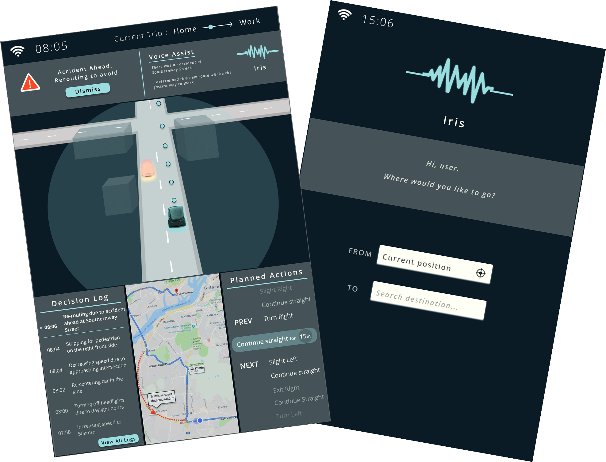

Autonomous Vehicle System For Trust
IRIS is a speculative design proposition for a tablet-sized screen for a future autonomous vehicle. The focus of this project was on designing for trust in mind, which after a research process resulted in three main design themes: transparency, anthropomorphism, and information to display.
An app for a Smartwatch that passively monitors your exposed sound
pollution during
the day using the
WearOS Design Guidelines
Extended periods of noise is not only bad for your ears, it hurts your mental well-being and health. This project produced a prototype of a passive sound recording app for a Smartwatch that lets users modelessly monitor their daily dose of noise as an overlay of their watches' face.
A graphical interface design idea for an online platform
to book university rooms, studios and other facilities.

URBS is a UI design for a website for users to view schedules and make bookings in for university rooms and facilities. It combines the activities of viewing and booking into the same sovreign view.
Design Review of system planned for redesign.
During my Summer Internship at Toyota Material Handling, I performed a thorough Design Review of a system planned for revamp. By utilizing Nielsen Norman Group's 10 Usability Heuristics, I structured my findings in an Excel sheet to then write my full Design Review report, consisting of examples and possible suggestions of solutions.
Contact me at Erik.Bennerhed@Gmail.com
or (+46)709309052